TURISMO OTAKU
Si el mundo del anime, el manga y los videojuegos te gusta, seguro que quieres aprovechar al máximo tu viaje a Japón. Viendo tiendas, museos e incluso parques temáticos o estatuas repartidas por todo el país.
Aquí te enseñamos algunas de las cosas que quizás te interesen.
TIENDAS
Mandarake
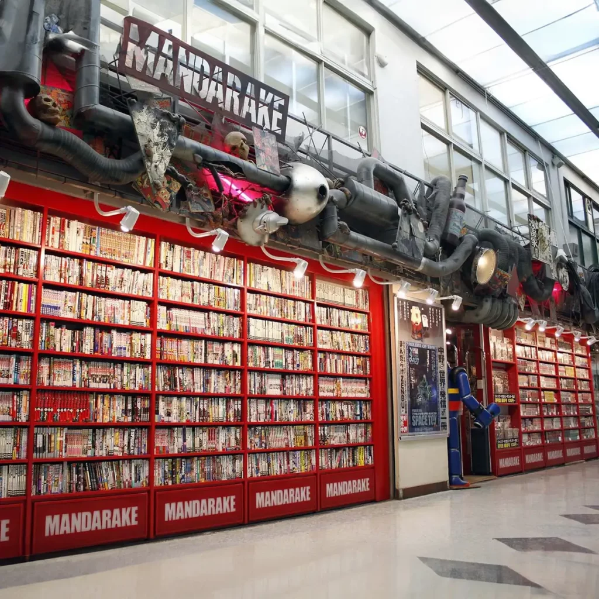Pokémon Center
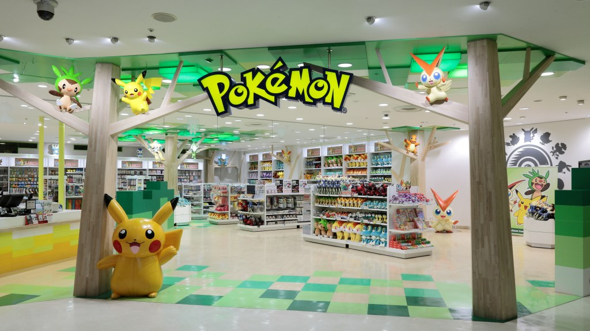Tokyo Character Street
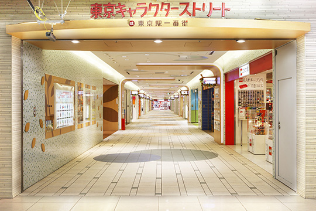Shibuya Parco
Book Off
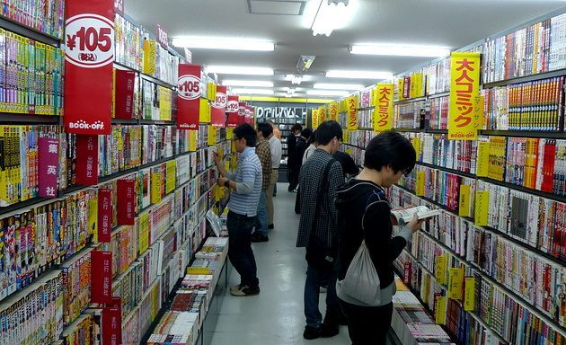Hobby Off
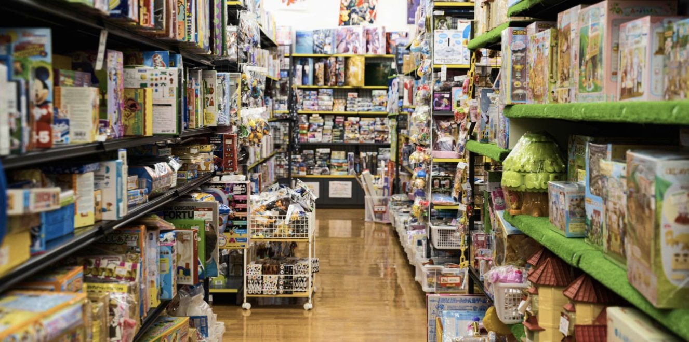Kotobukiya
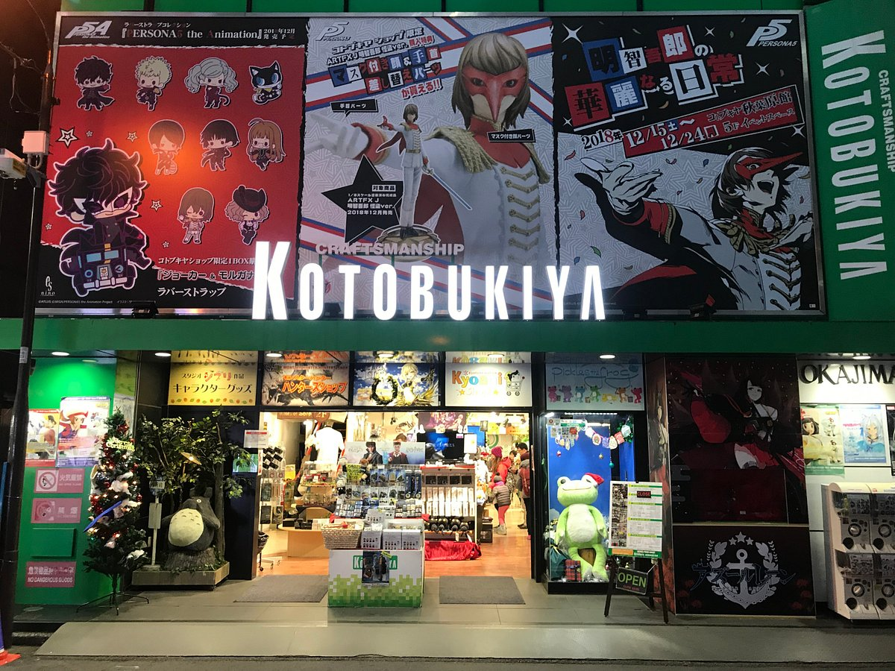Radio Kaikan
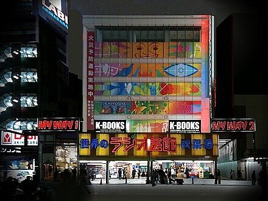Suruga-ya
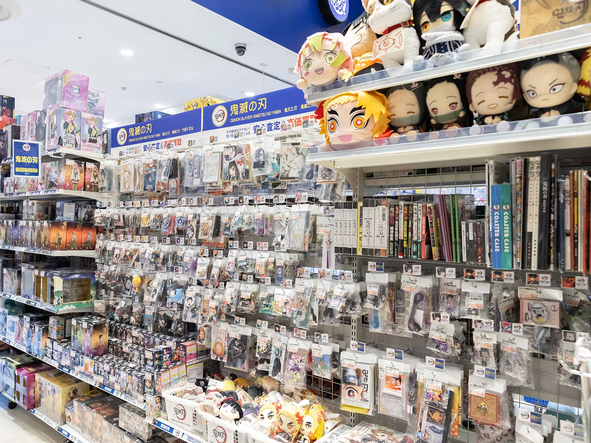MUSEOS
Museo Internacional del Manga
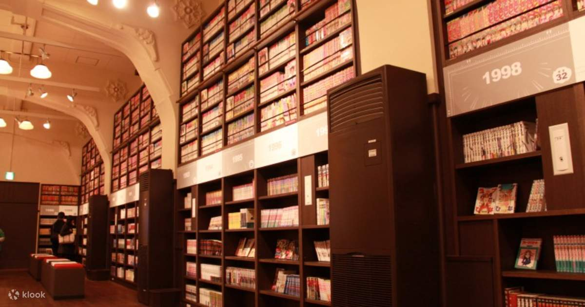Kyoto
Museo Ghibli
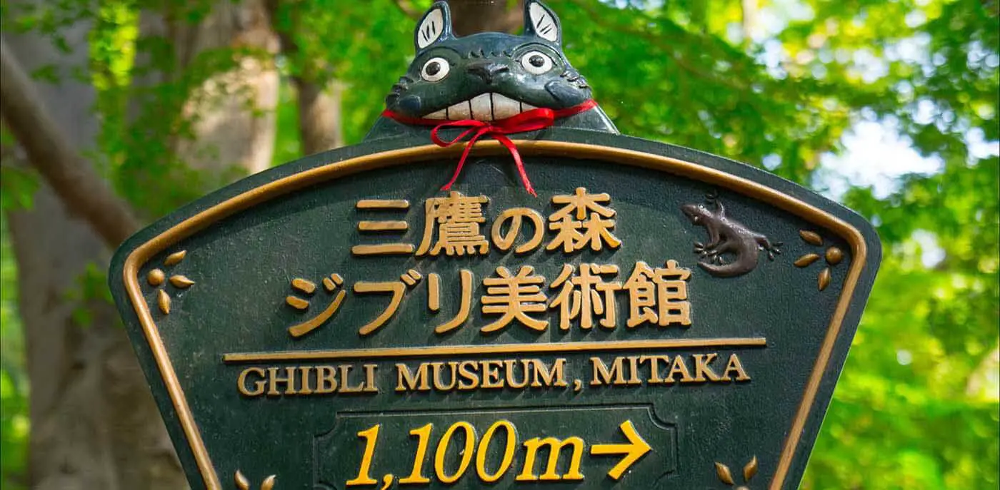Mitaka, Tokyo
Museo del Manga de Kitakyushu
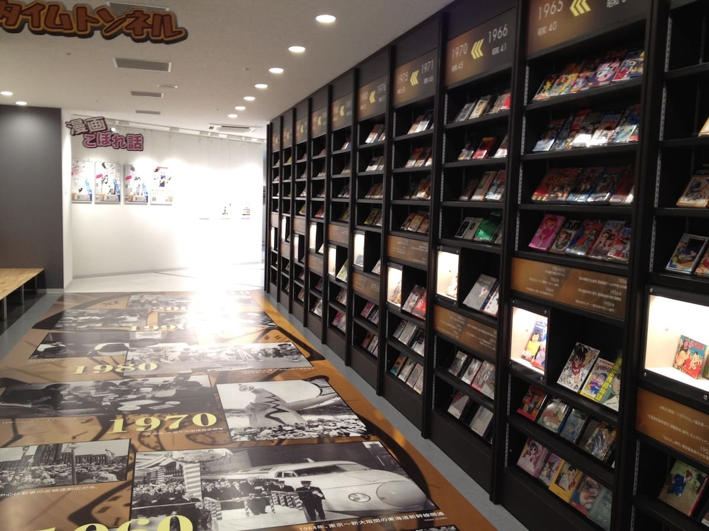Kitakyushu, Fukuoka
Museo Suginami Animation
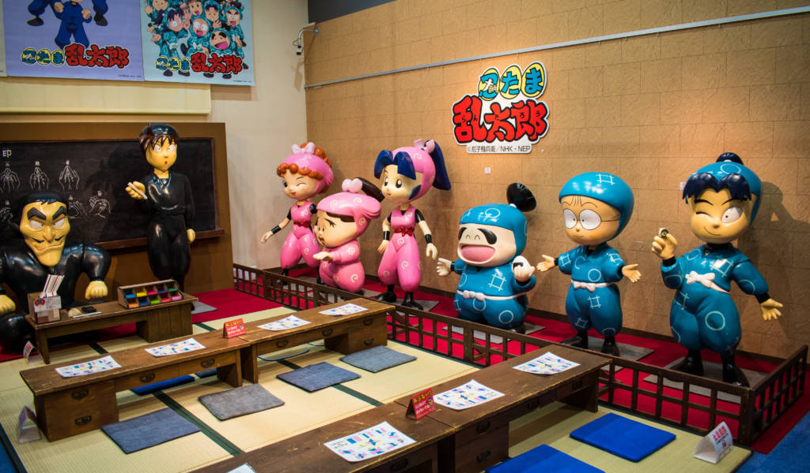Suginami, Tokyo
Toei Animation Gallery
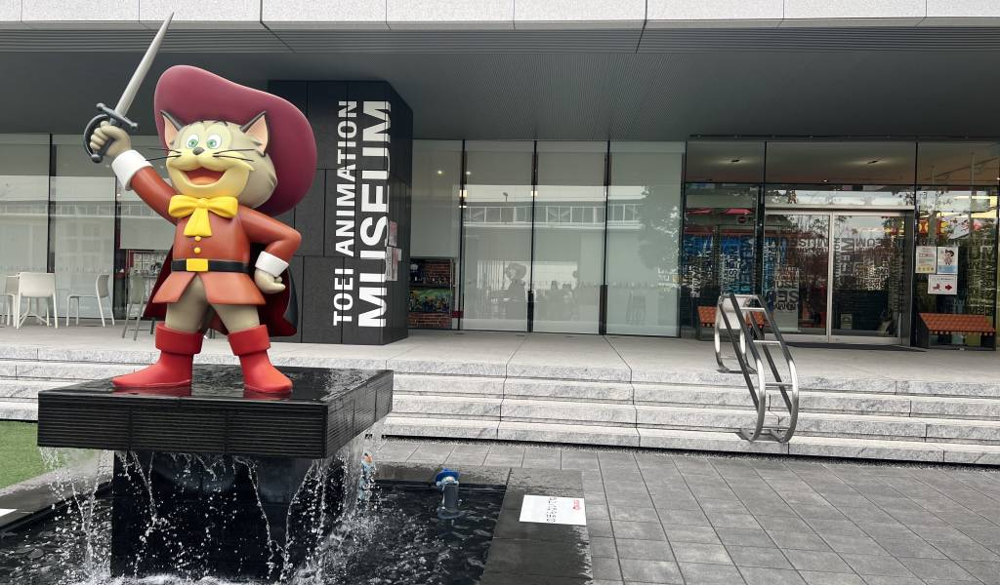Nerima, Tokyo
MUSEOS DE AUTORES MANGA
ZONAS TEMÁTICAS
Evangelion Kyoto Base
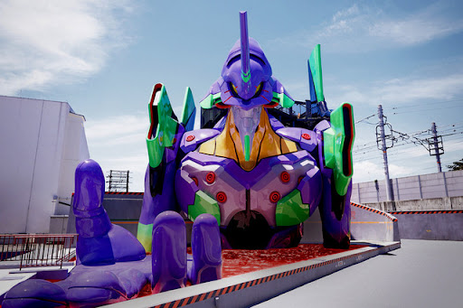Kyoto Eigamura, Kyoto
Naruto x BORUTO Fuji Hidden Leaf Village
Fuji Q Highland, Fujiyoshida
Naruto, Godzilla y Shinchan
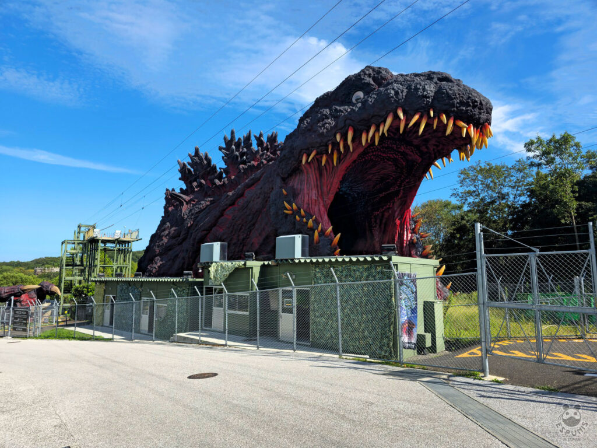Nijigen no Mori, Awaji
MANGA Y ANIME EN LA VIDA REAL
Santuario Washinomiya
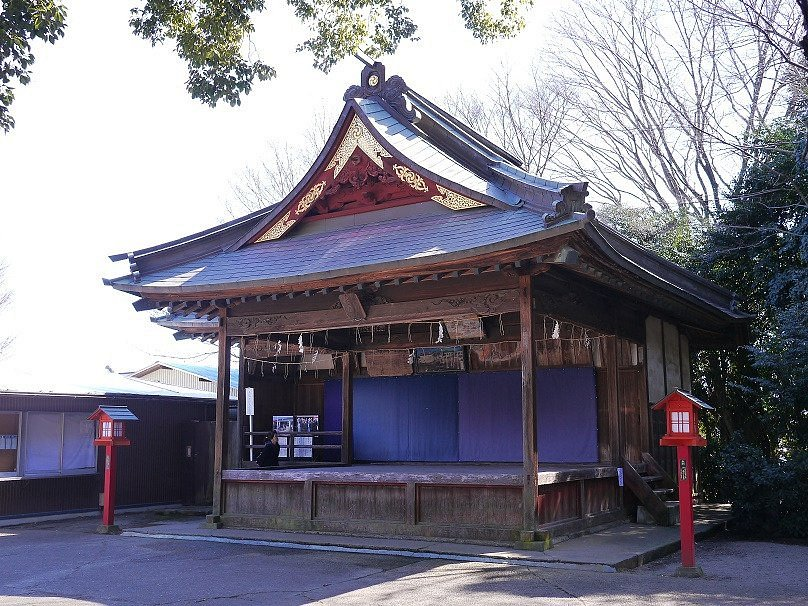Lucky Star
Chichibu Jinja
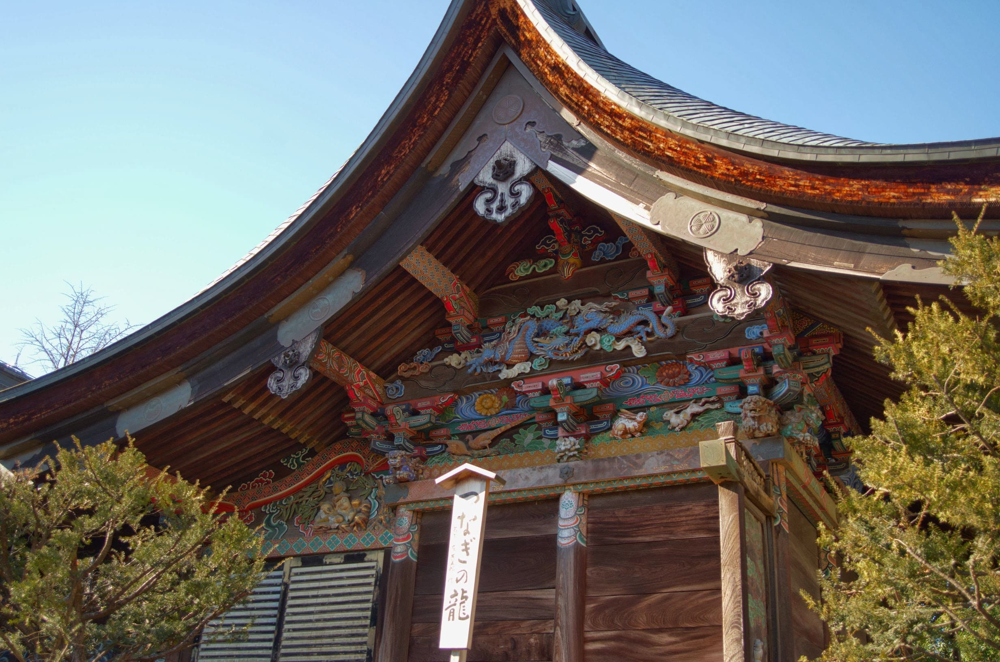Anohana
Minato Mirai 21
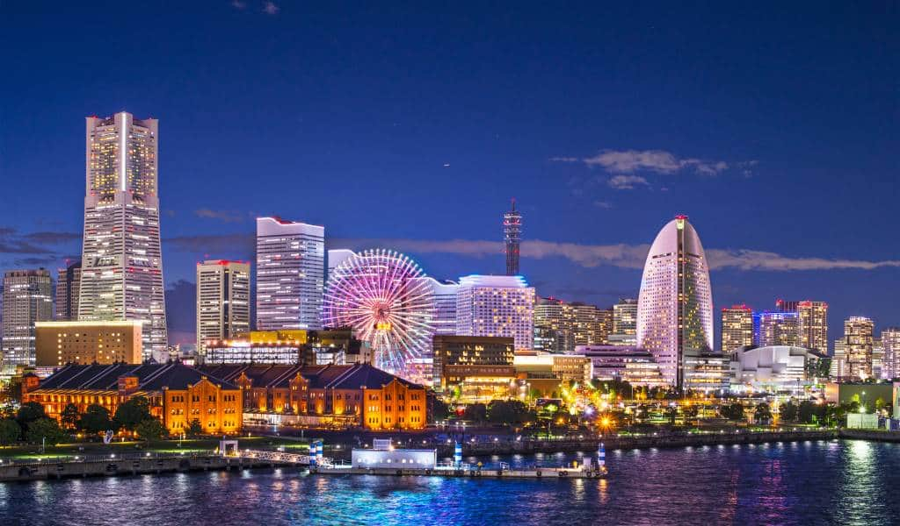Tokyo Revengers